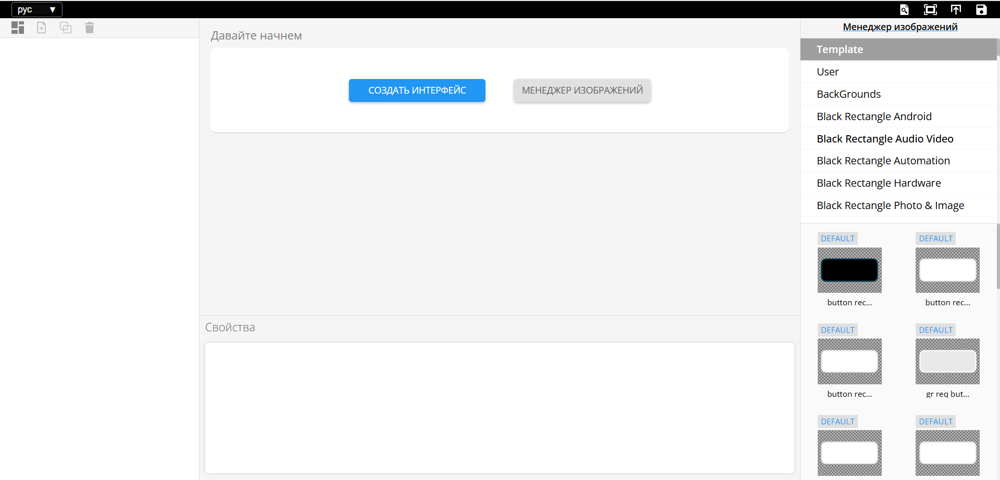
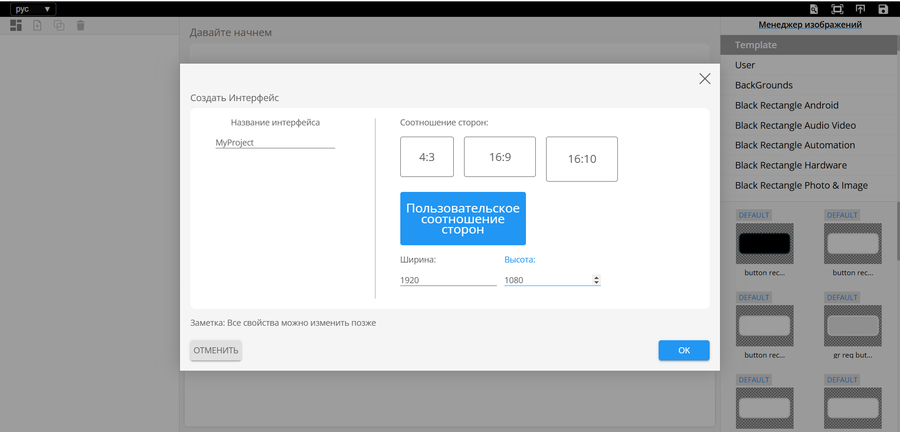

Function
Что такое узел Function в U-LOGIC?
В U-LOGIC узел Function позволяет писать пользовательский код на JavaScript для обработки объектов сообщений в потоке. Он используется для выполнения специфических задач, которые нельзя реализовать с помощью стандартных встроенных узлов. Когда вы пишете код на JavaScript в узле Function, он выполняется каждый раз при прохождении сообщения через узел.
В U-LOGIC функция должна либо возвращать объект (объект сообщения), либо ничего не возвращать. Если вернуть данные другого типа вместо объекта, это приведёт к ошибке. По умолчанию узел Function передаёт объект сообщения без изменений, передавая данные дальше в поток.
Идеально, если объект сообщения возвращается в конце кода внутри узла Function. Если разместить return в середине кода, это может привести к неполному выполнению оставшейся части кода.
Если узел Function должен выполнить асинхронное действие перед отправкой сообщения, он не может использовать return для возврата сообщения в конце функции. Вместо этого в таких случаях необходимо использовать node.send(), как показано ниже:
// Симуляция асинхронной операции с использованием setTimeout
setTimeout(() => {
// Через 2 секунды создаётся объект сообщения с некоторыми данными
const message = { payload: "Async operation complete" };
// Отправка сообщения в последующие узлы
node.send(message);
}, 2000);
Кроме того, если вам нужно передать объект сообщения в середине скрипта внутри узла Function в последующие узлы, вы можете использовать node.send() для этой цели, продолжая выполнение оставшейся части кода, как показано ниже:
// Извлечение данных из входящего сообщения
const inputData = msg.payload;
// Выполнение некоторой обработки
const processedData = inputData * 2;
// Отправка объекта сообщения с обработанными данными
node.send({ payload: `Processed data: ${processedData}` });
// Продолжение выполнения оставшегося кода...
// Пример дальнейшей обработки...
if (processedData > 100) {
node.warn("Обнаружено высокое значение обработанных данных!");
} else {
node.log("Значение обработанных данных в пределах нормы.");
}
// Возвращение изменённого объекта сообщения
return msg;
Если вы не хотите, чтобы функция передавала что-либо в следующий узел, вы можете вернуть null в узле Function.
По умолчанию узел Function имеет один выход, но его можно настроить на несколько выходов во вкладке настроек, изменив свойство output. Затем можно отправлять сообщения в каждый из выходов, используя массив, располагая их в порядке, соответствующем нужным выходам.
// Создание нескольких сообщений с разными типами данных
var msg1 = { payload: 1 };
var msg2 = { payload: [3,45,2,2,4] };
var msg3 = { payload: {"name":"bob"} };
var msg4 = { payload: "Это строка" };
// Возвращение массива сообщений
return [msg1, msg2, msg3, msg4];
Различные вкладки в узле Function
В узле Function есть четыре разных типа вкладок, каждая из которых имеет своё предназначение:
Setup
Outputs (Выходы): Позволяет настроить количество выходов, которые будет иметь узел Function.
Timeout (Время ожидания): Позволяет определить, сколько времени узел Function может выполняться до возникновения ошибки. По умолчанию, если установлено 0, тайм-аут не применяется.
Modules: Позволяет добавлять или импортировать дополнительные модули в узел Function. Эти модули будут автоматически устанавливаться при развёртывании потока. Однако в настройках (
-settings) необходимо включить параметр'functionExternalModules', установив его в'true'.
Настройка (On Start)
В этой вкладке можно написать код, который будет выполняться при старте узла. Это полезно для инициализации состояния, необходимого для работы узла Function.
Функция (On Message)
Это основная вкладка, в которой пишется JavaScript-код, выполняющийся при получении сообщения от других узлов.
Закрытие (On Stop)
Эта вкладка позволяет добавить код для очистки ресурсов перед остановкой узла, например, закрытия соединений или завершения фоновых задач перед повторным развёртыванием потока.
Логирование событий
Когда function-узлу в U-LOGIC нужно записать что-либо в лог, он может использовать следующие методы:
node.log(): используется для общего логирования.node.warn(): используется для записи предупреждений.node.error(): используется для записи ошибок.
Сообщения, записанные через node.warn() и node.error(), будут отображаться во вкладке debug.
Чтобы просмотреть сообщения, записанные через node.log(), можно проверить терминал, из которого был запущен U-LOGIC.
Если U-LOGIC работает через приложение, например, PM2, у него будет свой метод отображения логов.
На Raspberry Pi можно использовать команду u-logic-log для просмотра логов.
Если U-LOGIC запущен в FlowFuse Cloud, логи можно найти во вкладке U-LOGIC logs внутри интерфейса экземпляра.
Объекты U-LOGIC, доступные в function-узле
В function-узле U-LOGIC можно обращаться к следующим объектам:
node: объект, содержащий свойства и методы для настройки и взаимодействия с узлом в потоке.
context: локальный контекст узла.
flow: контекст уровня потока.
global: контекст уровня глобального окружения.
? (prev RED): объект, предоставляющий доступ к API среды выполнения U-LOGIC.env: объект, содержащий метод get для доступа к переменным окружения.
Применение и примеры
Пользовательская логика: Иногда в вашем потоке может понадобиться специфическая логика, которую невозможно реализовать с помощью стандартных узлов. В таких случаях используется function-узел.
В примере ниже функция конвертирует температуру (сгенерированную узлом inject в виде случайного числа) из Celsius в Fahrenheit, а также выполняет дополнительное форматирование.

Условная маршрутизация: Когда приходится обрабатывать широкий спектр условий с сложной логикой для каждого случая, switch-узел может оказаться недостаточно гибким. В таких ситуациях полезно использовать function-узел с несколькими выходами.
В примере ниже inject-узел генерирует случайное число и отправляет его в function-узел. Внутри function-узла выполняется оценка полученного числа, после чего оно направляется на разные выходы в зависимости от заданных диапазонов значений.

Документация по узлу
Функция JavaScript, запускаемая для сообщений, получаемых узлом.
Сообщения передаются в виде JavaScript-объекта msg.
По соглашению, объект msg содержит свойство msg.payload, содержащее тело сообщения.
Функция должна возвращать объект сообщения (или несколько объектов сообщений), но также может ничего не возвращать, чтобы остановить поток.
Вкладка On Start (Настройка) содержит код, который выполняется при запуске узла. Вкладка On Stop (Закрытие) содержит код, который выполняется при остановке узла.
Если код в On Start возвращает объект Promise, узел не начнёт обработку сообщений до тех пор, пока этот Promise не будет выполнен.
Подробности
Дополнительную информацию о написании функций можно найти в онлайн-документации.
Отправка сообщений
Функция может либо вернуть сообщения, которые она хочет передать следующим узлам в потоке, либо вызвать node.send(messages).
Она может вернуть/отправить:
Одиночный объект сообщения – передаётся узлам, подключённым к первому выходу.
Массив объектов сообщений – передаётся узлам, подключённым к соответствующим выходам.
Примечание: Код настройки выполняется во время инициализации узла. Поэтому, если в вкладке Setup вызывается node.send, последующие узлы могут не получить сообщение.
Если какой-либо элемент массива сам является массивом сообщений, тогда несколько сообщений отправляются на соответствующий выход.
Если возвращается null (либо как одиночное значение, либо как элемент массива), сообщение не передаётся дальше.
Логирование и обработка ошибок
Для логирования информации или сообщений об ошибках доступны следующие функции:
node.log("Сообщение лога")node.warn("Предупреждение")node.error("Ошибка")
Также можно использовать Catch-узел для обработки ошибок. Чтобы передать msg в Catch-узел, укажите его вторым аргументом в node.error:
node.error("Ошибка", msg);
Доступ к информации о узле
Следующие свойства позволяют получить информацию о текущем узле:
node.id- идентификатор узлаnode.name- имя узлаnode.outputCount- количество выходов узла
Использование переменных среды
Доступ к переменным среды можно получить с помощью env.get("MY_ENV_VAR").